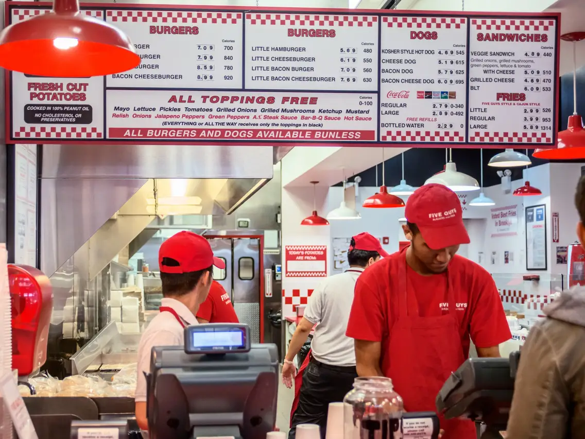
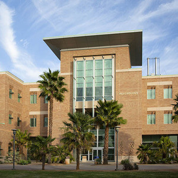
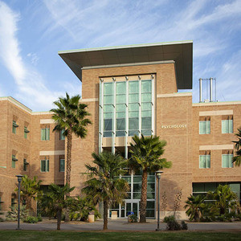

Francisco Romero
Enter bio here
Francisco Romero, a bright and inquisitive young man, embarked on a journey of self-discovery as a psychology major. From an early age, Francisco exhibited a deep fascination with the complexities of the human mind and the intricacies of human behavior. His unyielding passion for understanding the inner workings of the psyche would shape his path in remarkable ways.
Born into a family that embraced the importance of emotional well-being, Francisco grew up in an environment where empathy and compassion were valued. His parents, both counselors, fostered an atmosphere of open communication and understanding. These early influences laid the foundation for Francisco's profound interest in psychology and his desire to make a positive impact on the lives of others.
Throughout his high school years, Francisco's thirst for knowledge led him to devour books on psychology and engage in discussions with his teachers and peers. He eagerly explored various aspects of the field, from cognitive psychology to social psychology, captivated by the way our thoughts, emotions, and behaviors intertwine. It was clear to him that he wanted to pursue a career that would enable him to help individuals navigate the complexities of their lives.
As he entered college, Francisco's commitment to his chosen path deepened. He embraced his coursework with enthusiasm, eagerly immersing himself in the study of psychology. From introductory classes to advanced seminars, Francisco absorbed every piece of information, always hungry for more. He engaged in research projects, seeking to understand the nuances of human behavior and the factors that shape our perceptions of the world.
In addition to his academic pursuits, Francisco actively participated in extracurricular activities that allowed him to apply his knowledge in practical settings. He volunteered at local mental health clinics, offering support and comfort to those in need. His compassionate nature and genuine empathy made him a natural fit for the field.
Throughout his college journey, Francisco's understanding of psychology grew exponentially. He delved into specialized areas such as abnormal psychology, neuropsychology, and counseling techniques, developing a well-rounded knowledge base. However, he also recognized the importance of personal growth and self-reflection. Francisco engaged in his own therapy sessions, understanding the significance of introspection in becoming a skilled practitioner.
As graduation approached, Francisco faced the challenge of determining his next steps. He had a strong desire to contribute to the field and make a tangible impact on individuals' lives. Francisco decided to pursue a master's degree in counseling psychology, eager to gain the necessary skills to guide others through their personal struggles.
Throughout his graduate studies, Francisco honed his therapeutic techniques and embraced evidence-based practices. He completed internships at various counseling centers, working with diverse populations and helping individuals confront their challenges. Francisco's dedication to his clients and his genuine concern for their well-being earned him a reputation for being a compassionate and effective therapist.
Today, Francisco Romero stands as a beacon of hope for those grappling with mental health issues. His commitment to understanding the human mind and his unwavering dedication to helping others has led him to become a trusted and respected professional in the field of psychology. Francisco's journey reminds us of the transformative power of empathy and the profound impact one individual can make on the lives of others.
As Francisco continues his career, he remains steadfast in his belief that everyone deserves access to quality mental health care. Through his work, he strives to break down stigmas, promote wellness, and create a world where emotional well-being is prioritized. Francisco's unwavering passion for psychology and his commitment to improving the lives of others serve as an inspiration to all who cross his path.
Enter bio here
Enter bio here
Experience
Store Associate
• Responsible for communicating to upset customers, de-escalation
• Cashier and store associated
• Helped design store, decide where to put where
Forklift driver and Worker
• Driving forklift
• Making sure packages get delivered on time, staying extra time if necessary
• Communicate with other members of warehouse
• General Labour
Education
UC Riverside
Portfolio



